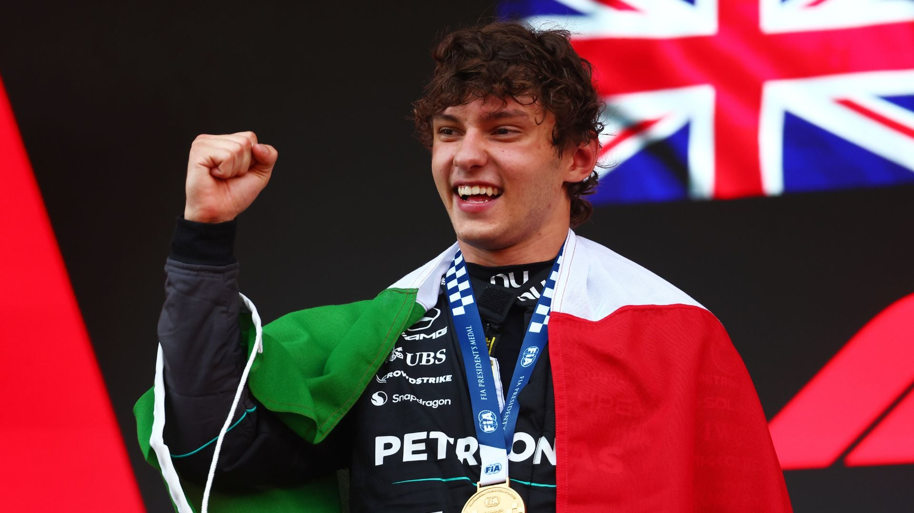

O prodígio Andrea Kimi Antonelli venceu o Grande Prêmio de Mônaco de Fórmula 1.

O prodígio Andrea Kimi Antonelli venceu o Grande Prêmio de Mônaco de Fórmula 1.
O jovem piloto italiano da Mercedes garantiu o topo do pódio no circuito de Monte Carlo, consolidando ainda mais o seu favoritismo ao título mundial.
O Domínio de Kimi Antonelli em Mônaco
O fim de semana nas ruas do Principado foi inteiramente dominado pela nova sensação do automobilismo mundial. Aos 19 anos, Antonelli teve uma atuação histórica ao conquistar um Grand Chelem — quando o piloto faz a pole position, lidera todas as voltas e crava a volta mais rápida da prova —, tornando-se o mais jovem da história a alcançar o feito na Fórmula 1.
A Classificação: No sábado, Antonelli superou Max Verstappen por uma diferença de apenas 0s043, assegurando a posição de honra no grid de largada.
A Corrida: O italiano resistiu à forte pressão de Lewis Hamilton no final e suportou uma prova caótica marcada por duas entradas de safety car e uma interrupção por bandeira vermelha.
Com este resultado, Antonelli emplacou a sua 5ª vitória consecutiva na temporada de 2026 e ampliou a liderança isolada no Campeonato Mundial de Pilotos.
O piloto italiano da Mercedes garantiu o topo do pódio no circuito de Monte Carlo, consolidando ainda mais o seu favoritismo ao título mundial.
Fontes:
Ge
O GLOBO
Folha de S.Paulo
Feito por: Li_yamauti